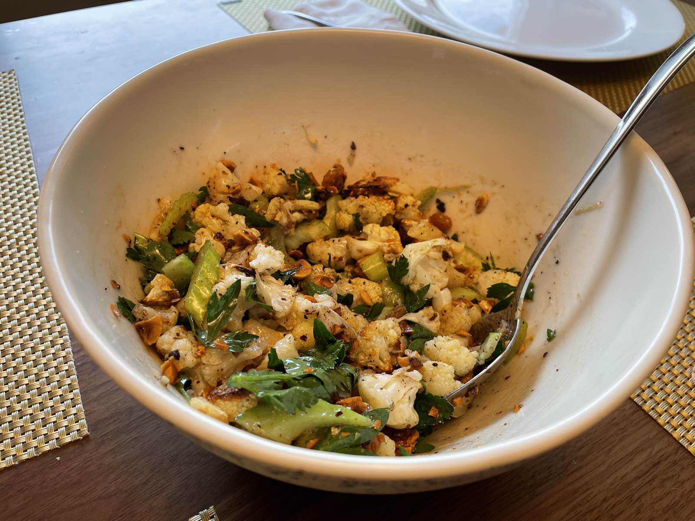
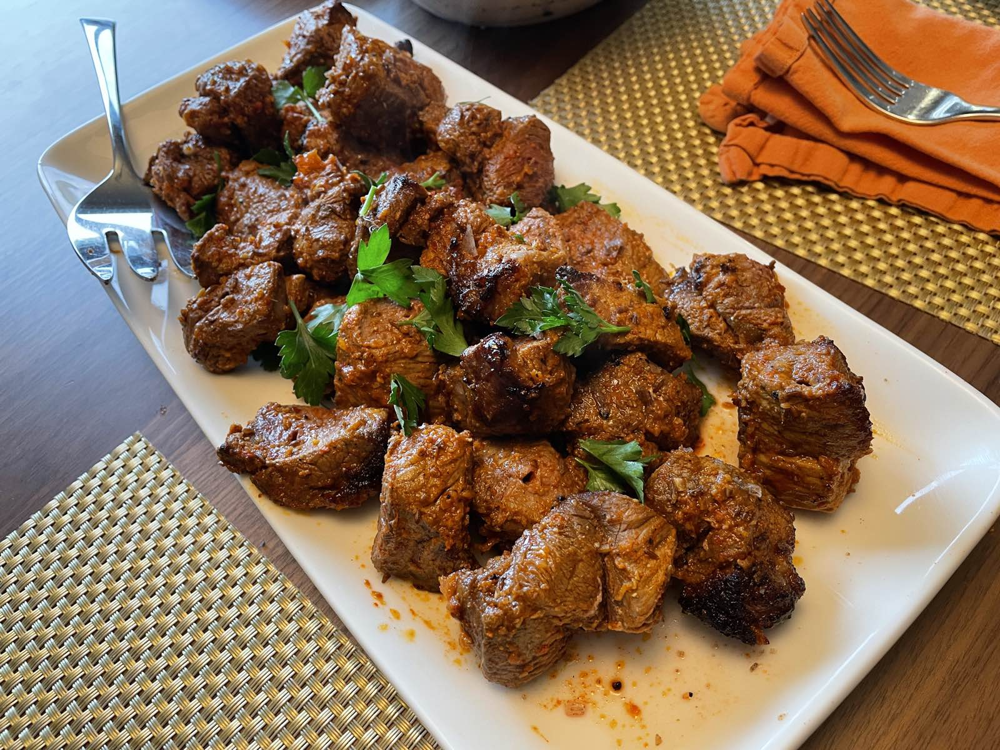
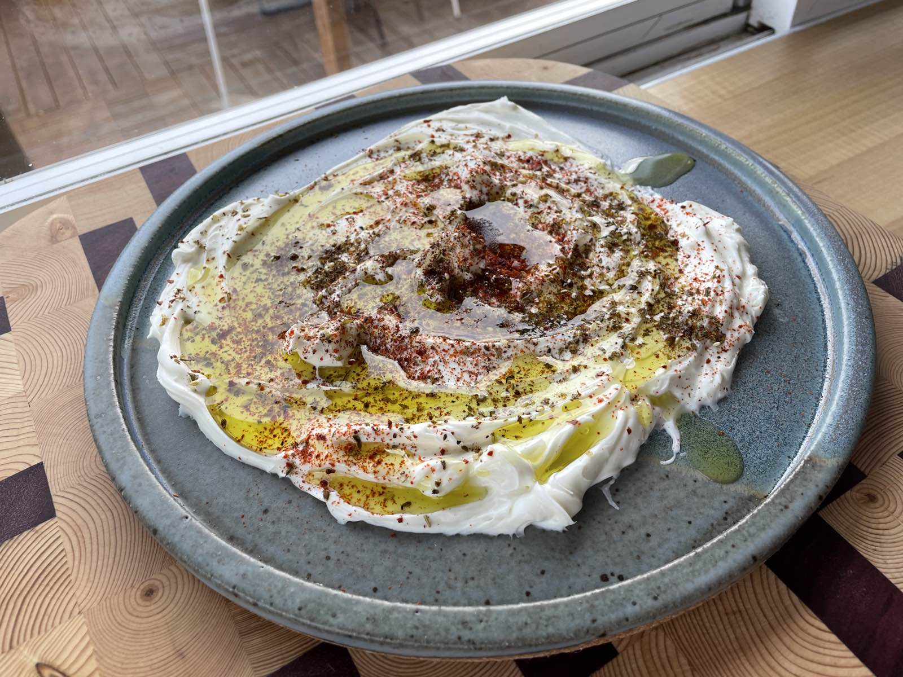

Lamb Kabobs, Cauliflower & Hazelnut Salad, Labneh
Well, the downside of the new kitchen is that the hood fan works well enough that I can no longer use the smoke detectors as an alert when the cooking is done. The upside is that the neighbors no longer think I’m a pyromaniac. Which is exactly what a pyromaniac would want them to think. I think we all know where this is fucking going.
Ahem.
That’s far more exposition than any cooking blog deserves so lets get to the meat and cauliflower of tonight’s dish lest I lead you on a Freudian journey through my hazily-faked memories about the first time I ate an oyster or some bullshit. Those verbose motherfuckers.
The real star of tonight’s dinner was the Cauliflower and Hazelnut Salad from Yotom Ottolenghi & Sami Tamimi’s Jerusalem. Well, at least, it’s mostly from there. I couldn’t find any pomegranate at all so like I used golden raisins (did you know that non-golden raisins have been proven to shorten your lifespan because of the amount of time you’ll spend asking yourself “WHY THE FUCK AM I EATING THESE INFERIOR DESSICATED HUSKS OF SADNESS AND DUST”). I also made a dressing out of the olive oil, maple syrup, allspice, cinnamon, sherry vinegar, salt and pepper. Normally cinnamon in anything that isn’t a goddamn cinnamon bun is a strictly “fuck off” type of thing in my mind, but idk, this Ottolenghi fellow seems to be on the level. The rest of the salad is a head of cauliflower broken up into small pieces, roasted with olive oil, salt and pepper at 450º until some pieces are super well browned and it’s all soft, some roasted and chopped hazelnuts, a bit of celery (always cut on the bias because fuck your bias), the aforementioned

The lamb was marinated in a bit of grated yellow onion & garlic, along side the juice of a lemon, some olive oil, aleppo chili, smoked paprika, kashmiri chili, and some ground caraway, cumin and coriander. I was going for a harrissa-type vibe with it. I let it sit while I made the salad and the labneh, and then skewered it and nearly lit my house on fire putting it under the broiler because despite the fact the weather is pretty Spring-like here, it’s still not Grilling Weather™. It did come out a wonderful medium rare after a few minutes under the broiler, but it still wasn’t nearly charred as much as I would have liked it to be.

I also bought a jar of labneh and put some fucking herbs and spices on it. Colonel Sanders would be a-fucking-titter to find out this secret. This is essentially a full-on goddamn rip off of kenji’s labne and za’atar plate, but like, apparently in Seattle, we put an h on labneh so like it’s totally different. Don’t tell the start of the blog post, but this was the actual favorite part of the meal.

I also forgot to make pita dough and realized this like 20 minutes before dinner, but thankfully I had some store-bought pita in the freezer that I could heat up. This was a great saving grace since like what else would my kids eat? Lamb? Cauliflower? LOL. Why the fuck would they do that?